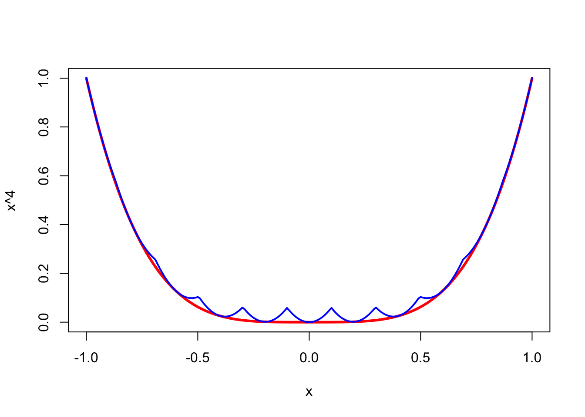
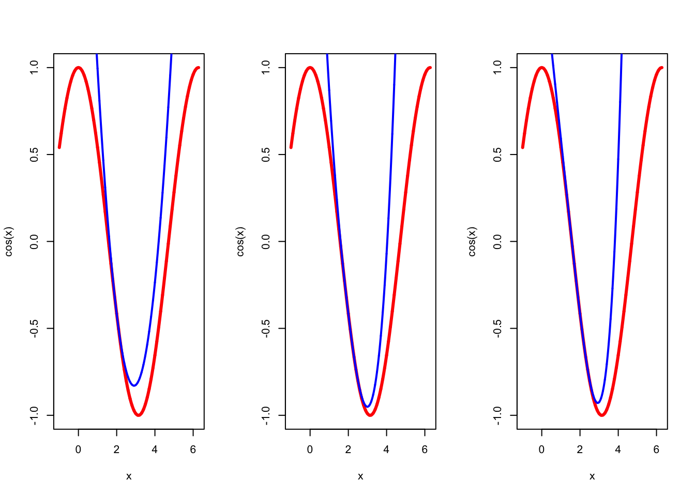
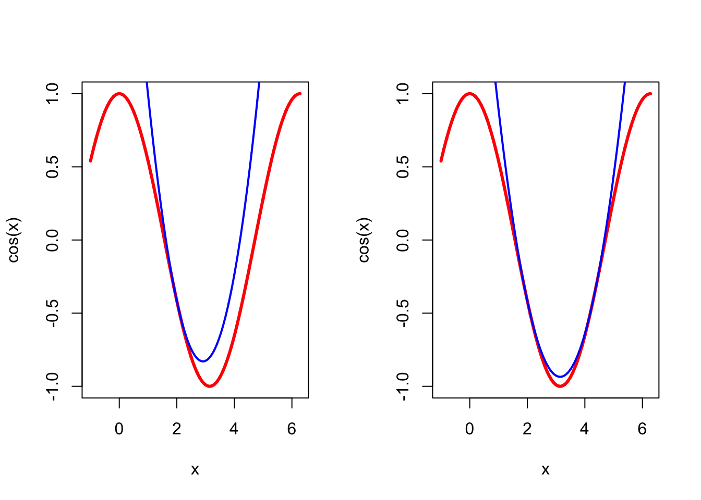

6 Sharp Majorization
##Introduction
6.1 Comparing Majorizations
The set of all real-valued functions \(\mathcal{M}_Y(f)\) that majorize \(\ f\) on \(\mathcal{Y}\) is convex.
If we order \(\mathcal{M}_Y(f)\) by \(g\leq_Y h\) if \(g(y)\leq h(y)\) for all \(y\in\mathcal{Y}\), then \(\langle\mathcal{M}_Y(f),\leq_Y\rangle\) is a lattice, because if \(g\) and \(h\) majorize \(\ f\) on \(\mathcal{Y}\), then so do the pointwise maximum and minimum of \(g\) and \(h.\)
In fact the lattice \(\langle\mathcal{M}_Y(f),\leq_Y\rangle\) is inf-complete, because the pointwise infimum of a set of majorizing functions again majorizes. Clearly \(f\) itself is the minimal element of the lattice. The lattice is not sup-complete, although it is if we consider the set of extended real valued functions which can take the value \(+\infty\).
** The following needs to be repaired – only true for majorization at a point 03/28/15 **
Note, however, that the pointwise maximum of a finite number of majorizing functions does majorize. If \(f(x)\leq g_i(x,y)\) and \(f(x)=g_i(x,x)\) for all \(i=1,\cdots,n\) then \(f(x)=\max_{i=1}^n g_i(x,x)\) and \(f(x)\leq\max_{i=1}^n g_i(x,y)\). But if \(\mathcal{I}\) is infinite, then \(\sup_{i\in\mathcal{I}}g_i(x,y)\) can be infinite as well, and in that case it is not a majorization function. In contrast it is always true that \(f(x)\leq\inf_{i\in I}g_i(x,y)\).
We can actually give an even stronger result than inf-completeness. Suppose \(g_i(x,y_i)-f(x)\geq 0\) for all \(i=1,\cdots,n\) and for all \(x\in\mathcal{X}\), and \(g_i(y_i,y_i)-f(y_i)=0\) for all \(i=1,\cdots,n\). Thus \(g_i\) majorizes \(f\) at \(y_i\). Now let \[ h(x)=\min_{i=1}^n\ (g_i(x,y_i)-f(x)) \] then \(h(x)\geq 0\) for all \(x\in\mathcal{X}\) and \(h(y_i)=0\) for all \(i=1,\cdots,n\). Thus \(f(x)+h(x)=\min_{i=1}^n g_i(x,y_i)\) majorizes \(f\) at \(y_1,\cdots,y_n\).
As an example, consider the function \(f:x\rightarrow x^4\) on \([-1,+1]\). On that interval we have \(f''(x)\leq 12\) and thus if \(-1\leq y\leq +1\) we have the quadratic majorizer \[ g(x,y)=y^4+4y^3(x-y)+6(x-y)^2. \] Now take the \(y_i\) to be the 11 points \(-1.0,-0.8,\cdots,0.8,1.0\) and take \(h(x)\) to be the minimum of the \(g(x,y_i)\).
Of course \(\min_{-1\leq y\leq +1} g(x,y)=f(x)\) which means we can make the majorization as sharp as we want by increasing the number of support points.
6.2 Sharp Quadratic Majorization
A quadratic function \[ g(x)=c+b(x-y)+\frac12 a (x-y)^2 \] majorizes \(f\) in \(y\) if and only if \(c=f(y)\), \(b=f'(y)\), and \[ a\geq A(y)\mathop{=}\limits^{\Delta}\sup_{x\not= y}\delta(x|y), \] where \[ \delta(x|y)\mathop{=}\limits^{\Delta}\frac{f(x)-f(y)-f'(y)(x-y)}{\frac12 (x-y)^2}. \] We find the best quadratic majorization of \(f\) in \(y\) by choosing \(a=A(y)\).
To study the relation between \(f\) and its quadratic majorizers more in depth, we define \(\phi:\mathbb{R}^3\Rightarrow\mathbb{R}\) and \(\delta:\mathbb{R}^3\Rightarrow\mathbb{R}\) by \[ \phi(x,y,a)\mathop{=}\limits^{\Delta}f(y)+f'(y)(x-y)+\frac12 a(x-y)^2 \] and \(\delta(x,y,a)\mathop{=}\limits^{\Delta}f(x)-\phi(x,y,a)\). We also define slices of these functions, using bullets. Thus, for example, \(\phi(\bullet,y,a)\) is a function of a single variable, with \(y\) and \(a\) fixed at unique values.
Now \(\phi(\bullet,y,a)\gtrsim f(x)\) if and only if \(\delta(x,y,a)\leq 0\) for all \(x,\) which is true if and only if \(\delta^\star(y,a)=0,\) where \[ \delta^\star(y,a)\mathop{=}\limits^{\Delta}\sup_x\delta(x,y,a). \] Note that \(\delta(y,y,a)=0\), and thus generally \(\delta^\star(y,a)\geq 0\).
Because \(\delta(x,y,\bullet)\) is linear in \(a\), we see that \(\delta^\star(y,\bullet)\) is convex. In other words, \[ \mathcal{A}(y)\mathop{=}\limits^{\Delta}\{a\mid\delta^\star(y,a)\leq 0\} \] is an interval, which may be empty. Now \(\phi(\bullet,y,a)\gtrsim_y f(x)\) if and only if \(a\in\mathcal{A}(y)\). If \(\mathcal{A}(y)=\emptyset\) then no quadratic majorization exists.
Since \(a\in\mathcal{A}(y)\) implies \(b\in\mathcal{A}(y)\) for all \(b\geq a\), we see that \(\mathcal{A}(y)\) is either empty, or an interval of the form \([a_\star(y),+\infty)\) or \((a_\star(y),+\infty)\), with \[ a_\star(y)\mathop{=}\limits^{\Delta}\inf_a\mathcal{A}(y). \] If \(\mathcal{A}(y)=\emptyset\) we set \(a_\star(y)=+\infty\). The majorization function \(\phi(\bullet,y,a_\star(y))\) is called the sharpest quadratic majorization of \(f\) at \(y\) (J. De Leeuw and Lange 2009).
Now \[ \delta'(x)=f'(x)-f'(y)-a(x-y), \] and \[ \delta''(x)=f''(x)-a. \] We see that \(\delta\) is concave if \(a\geq\sup_x f''(x)\). Moreover \(\delta\) is increasing if \(\delta'\geq 0\), i.e. if \[ \frac{f'(x)-f'(y)}{x-y}\begin{cases}\geq a&{ \text{if}\ }x>y\\\leq a&{ \text{if}\ }x<y\end{cases} \] for all \(x\).
Thus if \(\delta\) has a maximum at \(\hat x\) we must have \[ a=\frac{f'(\hat x)-f'(y)}{\hat x - y}, \] as well as \[ a\geq f''(\hat x). \] At the maximum \[ \delta(\hat x)=f(\hat x)-f(y)-\frac12(f'(\hat x)+f'(y)). \]
###Existence
As we have seen in section II.5.5.2 quadratic majorizers exist if \(\beta_V(y)<\infty.\) Although \(\beta_V(y)<\infty\) is independent of \(V\), the numerical value of \(\beta_V(y)\) does depend on \(V\), and of course on \(y\).
We say that a sharp quadratic majorizer exists if \(\beta_V(y)=\max_x\delta_V(x,y)\), i.e. if the supremum is attained. We the define the sharp quadratic majorizer of \(f\) at \(y\) as \(g\) with \[ g(x,y)=f(y)+(x-y)'\mathcal{D}f(y)+\frac12\beta_V(y)(x-y)'V(x-y) \] The corresponding majorization algorithm is \[ x^{(k+1)}=x^{(k)}-\frac{1}{\beta_V(x^{(k)})}V^{-1}\mathcal{D}f(x^{k}). \]
If \(f\) is convex we can generalize the tangential majorization algorithm of J. De Leeuw and Lange (2009), section 6, to compute \(\beta.\) For convex \(f\) \[ b(x)\geq f(z)+(x-z)'\mathcal{D}f(z)-f(y)-(x-y)'\mathcal{D}f(y), \] and thus \[ b(x)\geq \frac {u'd+c}{\frac12 u'u},\tag{3} \] with \[\begin{align*} u&:=x-y,\\ d&:=\mathcal{D}f(z)-\mathcal{D}f(y),\\ c&:=f(z)-f(y)+(y-z)'\mathcal{D}f(z). \end{align*}\] If the derivative of the minorizer on the right hand side of \((3)\) vanishes we have \(u\) proportional to \(d,\) say \(u=\lambda d.\) It remains to maximize over \(\lambda\). The maximum exists because convexity implies \(c\leq 0\) and it is attained for \(\lambda=-2\frac{c}{d'd}.\) Thus tangential majorization gives the algorithm \[ x^{(k+1)}=y-2\frac{f(x^{(k)})-f(y)+(y-x^{(k)})'\mathcal{D}f(x^{(k)})}{(\mathcal{D}f(x^{(k)})-\mathcal{D}f(y))'(\mathcal{D}f(x^{(k)})-\mathcal{D}f(y))}(\mathcal{D}f(x^{(k)})-\mathcal{D}f(y)) \]
We can compute the generalization \(\beta_V\) with basically the same tangential majorization algorithm. \[ x^{(k+1)}=y-2\frac{f(x^{(k)})-f(y)+(y-x^{(k)})'\mathcal{D}f(x^{(k)})}{(\mathcal{D}f(x^{(k)})-\mathcal{D}f(y))'V^{-1}(\mathcal{D}f(x^{(k)})-\mathcal{D}f(y))}V^{-1}(\mathcal{D}f(x^{(k)})-\mathcal{D}f(y)) \]
Quadratic majorization with \(A=\beta_V V\) updates \(x\) with \[ x^{(k+1)}=x^{(k)}-\frac{1}{\beta_V(x^{(k)})}V^{-1}\mathcal{D}f(x^{k}), \] which has an iteration matrix at a solution \(x\) equal to \[ \mathcal{M}(x)=I-\frac{1}{\lambda_+(V^{-1}\mathcal{D}^2f(x))}V^{-1}\mathcal{D}^2f(x), \] and an iteration radius \[ \kappa(x)=1-\frac{\lambda_2(V^{-1}\mathcal{D}^2f(x))}{\lambda_1(V^{-1}\mathcal{D}^2f(x))}, \] where \(\lambda_1\geq\lambda_2\) are the two largest eigenvalues of \(V^{-1}\mathcal{D}^2f(x).\)
As an example, consider \(f\) defined by \(f(x)=\sum_{i=1}^n\log(1+\exp(r_i'x)).\) The function is convex, and as we have shown \(\mathcal{D}^2f(x)\leq\frac14 R'R.\)
###Optimality with Two Support Points
Building on earlier work by Groenen, Giaquinto, and Kiers (2003), Van Ruitenburg (2005) proves that a quadratic function \(g\) majorizing a differentiable function \(f\) at two points must be a sharp quadratic majorizer. We summarize his argument here.Lemma 1: Suppose two quadratic functions \(g_1\not= g_2\) both majorize the differentiable function \(f\) at \(y\). Then either \(g_1\) strictly majorizes \(g_2\) at \(y\) or \(g_1\) strictly majorizes \(g_2\) at \(y\).
Proof: We have \[\begin{align*} g_1(x)&=f(y)+f'(y)(x-y)+\frac12 a_1(x-y)^2,\tag{1a}\\ g_2(x)&=f(y)+f'(y)(x-y)+\frac12 a_2(x-y)^2,\tag{1b} \end{align*}\] with \(a_1\not= a_2\). Subtracting \((1a)\) and \((1b)\) proves the lemma. QEDLemma 2: Suppose the quadratic function \(g_1\) majorizes a differentiable function \(f\) at \(y\) and \(z_1\not= y\) and that the quadratic function \(g_2\) majorizes \(f\) at \(y\) and \(z_2\not= y\). Then \(g_1=g_2\).
Proof: Suppose \(g_1\not= g_2\). Since both \(g_1\) and \(g_2\) majorize \(f\) at \(y\), Lemma 1 applies. If \(g_2\) strictly majorizes \(g_1\) at \(y\), then \(g_1(z_2)<g_2(z_2)= f(z_2)\), and \(g_1\) does not majorize \(f\). If \(g_1\) strictly majorizes \(g_2\) at \(y\), then similarly \(g_2(z_1)< g_1(z_1) = f(z_1)\), and \(g_2\) does not majorize \(f\). Unless \(g_1=g_2\), we reach a contradiction. QEDWe now come to Van Ruitenburg’s main result.
Theorem 1: Suppose a quadratic function \(g_1\) majorizes a differentiable function \(f\) at \(y\) and at \(z\not= y\), and suppose \(g_2\not= g_1\) majorizes \(f\) at \(y\). Then \(g_2\) strictly majorizes \(g_1\) at \(y\).
Proof: Suppose \(g_1\) strictly majorizes \(g_2\). Then \(g_2(z)<g_1(z)=f(z)\) and thus \(g_2\) does not majorize \(f\). The result now follows from Lemma 1. QED6.2.1 Even and Odd Functions
If \(f\) is even then \[\begin{align*} \delta(-y,y,a)&=+2yf'(y)-2ay^2,\\ \mathcal{D}_1\delta(-y,y,a)&=-2f'(y)+2ay,\\ \mathcal{D}_{11}\delta(-y,y,a)&=f''(y)-a. \end{align*}\] If \(a=f'(y)/y\) then both \(\delta(-y,y,a)=0\) and \(\mathcal{D}_1\delta(-y,y,a)=0\).
\[ f(x)-f(y)-f'(y)(x-y)-\frac12\frac{f'(y)}{y}(x-y)^2\leq 0\qquad\forall x \]
If \(f\) satisfies the differential inequality \[ f''(x)\leq\frac{f'(x)}{x}\qquad\forall x \] then \(\delta(x,y,f'(y)/y)\) is
Assuming that \(f(x)\) is even, i.e. \(f(x)=f(-x)\) for all \(x\), simplifies the construction of quadratic majorizers. If an even quadratic \(g\) satisfies \(g(y)=f(y)\) and \(g'(y)=f'(y)\), then it also satisfies \(g(-y)=f(-y)\) and \(g'(-y)=f'(-y)\). If in addition \(g\) majorizes \(f\) at either \(y\) or \(-y\), then it majorizes \(f\) at both \(y\) and \(-y\), and Theorem implies that it is the best possible majorization at both points. This means we only need an extra condition to guarantee that \(g\) majorizes \(f\). The next theorem, essentially proved in the references Groenen, Giaquinto, and Kiers (2003), Jaakkola and Jordan (2000), Hunter and Li (2005), by other techniques, highlights an important sufficient condition.Theorem: Suppose \(f(x)\) is an even, differentiable function on \(\mathbb{R}\) such that the ratio \(f'(x)/x\) is decreasing on \((0,\infty)\). Then the even quadratic \[\begin{eqnarray*} g(x) & = & {f'(y) \over 2y}(x^2-y^2)+f(y) \end{eqnarray*}\] is the best majorizer of \(f(x)\) at the point \(y\).
Proof: It is obvious that \(g(x)\) is even and satisfies the tangency conditions \(g(y)=f(y)\) and \(g'(y)=f'(y)\). For the case \(0 \le x \le y\), we have \[\begin{eqnarray*} f(y)-f(x) & = & \int_x^y f'(z)\, dz \\ & = & \int_x^y {f'(z) \over z} z \, dz \\ & \ge & {f'(y) \over y} \int_x^y z \, dz \\ & = & {f'(y) \over y}{1 \over 2}(y^2-x^2) \\ & = & f(y) -g(x), \end{eqnarray*}\] where the inequality comes from the assumption that \(f'(x)/x\) is decreasing. It follows that \(g(x) \ge f(x)\). The case \(0 \le y \le x\) is proved in similar fashion, and all other cases reduce to these two cases given that \(f(x)\) and \(g(x)\) are even. QEDThere is an condition equivalent to the sufficient condition of Theorem that is sometimes easier to check.
Theorem: The ratio \(f'(x)/x\) is decreasing on \((0,\infty)\) if and only \(f(\sqrt{x})\) is concave. The set of functions satisfying this condition is a closed under the formation of (a) positive multiples, (b) convex combinations, (c) limits, and (d) composition with a concave increasing function \(g(x)\).
Proof: Suppose \(f(\sqrt{x})\) is concave in \(x\) and \(x >y\). Then the two inequalities \[\begin{eqnarray*} f(\sqrt{x}) & \le & f(\sqrt{y})+{f'(\sqrt{y}) \over 2\sqrt{y}}(x-y) \\ f(\sqrt{y}) & \le & f(\sqrt{x})+{f'(\sqrt{x}) \over 2\sqrt{x}}(y-x) \end{eqnarray*}\] are valid. Adding these, subtracting the common sum \(f(\sqrt{x})+f(\sqrt{y})\) from both sides, and rearranging give \[\begin{eqnarray*} {f'(\sqrt{x}) \over 2\sqrt{x}}(x-y) & \le & {f'(\sqrt{y}) \over 2\sqrt{y}}(x-y) . \end{eqnarray*}\] Dividing by \((x-y)/2\) yields the desired result \[\begin{eqnarray*} {f'(\sqrt{x}) \over \sqrt{x}} & \le & {f'(\sqrt{y}) \over \sqrt{y}} . \end{eqnarray*}\] Conversely, suppose the ratio is decreasing and \(x > y\). Then the mean value expansion \[\begin{eqnarray*} f(\sqrt{x}) & = & f(\sqrt{y})+{f'(\sqrt{z}) \over 2\sqrt{z}}(x-y) \end{eqnarray*}\] for \(z \in (y,x)\) leads to the concavity inequality. \[\begin{eqnarray*} f(\sqrt{x}) & \le & f(\sqrt{y})+{f'(\sqrt{y}) \over 2\sqrt{y}}(x-y) . \end{eqnarray*}\] The asserted closure properties are all easy to check. QEDAs examples of property (d) of Theorem , note that the functions \(g(x) = \ln x\) and \(g(x) = \sqrt{x}\) are concave and increasing. Hence, if \(f(\sqrt{x})\) is concave, then \(\ln f(\sqrt{x})\) and \(f(\sqrt{x})^{1/2}\) are concave as well.
6.3 Sharp Piecewise Linear
Suppose \(f\) is a real function of a real variable. For each \(x\not= y\) define \[ \delta_f(x,y):=\frac{f(x)-f(y)}{x-y}. \] If \(f\) is differentiable at \(y\) we set \(\delta_f(y,y)=f'(y)\). Also define \[\begin{align*} \underline{\delta}_f(y)&:=\inf_{x>y} \delta_f(x,y),\\ \overline{\delta}_f(y)&:=\sup_{x<y} \delta_f(x,y). \end{align*}\] Of course \(\underline{\delta}_f(y)\) could be \(-\infty\) and/or \(\overline{\delta}_f(y)\) could be \(+\infty\), and we will take these possibilities into account.
Note that if \(f\) is differentiable at \(y\) and \(\delta_f(x,y)\) is increasing in \(x\) then \(\underline{\delta}_f(y)=\overline{\delta}_f(y)=f'(y)\). If \(\delta_f(x,y)\) is decreasing in \(x\) then \(\underline{\delta}_f(y)=\lim_{x\rightarrow+\infty}\delta_f(x,y)\) and \(\overline{\delta}_f(y)=\lim_{x\rightarrow-\infty}\delta_f(x,y)\).
If \(x>y\) then \(\delta_f(x,y)\geq\underline{\delta}_f(y)\) and thus \[ f(x)\geq f(y)+\underline{\delta}_f(y)(x-y). \] If \(x<y\) then \(\delta_f(x,y)\leq\overline{\delta}_f(y)\) and thus also \[ f(x)\geq f(y)+\overline{\delta}_f(y)(x-y). \] This means that if we define the extended real valued function \[ h(x,y):=\begin{cases} f(y)+\overline{\delta}_f(y)(x-y)&\text{ if }x<y,\\ f(y)+\underline{\delta}_f(y)(x-y)&\text{ if }x>y,\\ f(y)&\text{ if }x=y, \end{cases} \] then \(f(x)\geq h(x,y)\) for all \(x\) and \(y\) and we have a minorization function consisting of two line segments.
If \(f(x)=|x|\) then \(\delta_f(x,0)=\mathbf{sign}(x)\). Thus \(\underline{\delta}_f(0)=1\) and \(\overline{\delta}_f(0)=-1\). It follows that \(h(x,0)=|x|\), as expected.
If \(f(x)=ax^2+bx+c\) then \(\delta_f(x,y)=a(x+y)+b\). Thus if \(a>0\) we have \(\underline{\delta}_f(y)=\overline{\delta}_f(y)=a\) and \(h(x,y)=f(y)+a(x-y)\). If \(a<0\) we have \(\underline{\delta}_f(y)=-\infty\) and \(\overline{\delta}_f(y)=+\infty\).
If \(f(x)=ax^3+bx^2+cx+d\), with \(a\not= 0\), then \(\delta_f(x,y)=ax^2+(ay+b)x+(ay^2+by+c)\). Suppose \(a>0\). Then \(\overline{\delta}_f(y)=+\infty\). The minimum of \(\delta_f(x,y)\) over \(x\) is attained at \(-(ay+b)/2a\), and thus \[ \underline{\delta}_f(y)=\begin{cases} f'(y)&\text{ if }y\geq-\frac{b}{3a},\\ \min_x\delta_f(x,y)&\text{ if }y<-\frac{b}{3a}. \end{cases} \] If \(a<0\) we find, in the same way, that \(\underline{\delta}_f(y)=-\infty\) and that \[ \overline{\delta}_f(y)=\begin{cases} f'(y)&\text{ if }y\leq-\frac{b}{3a},\\ \max_x\delta_f(x,y)&\text{ if }y>-\frac{b}{3a}. \end{cases} \]
Consider the quartic \(f(x)=ax^4+bx^3+cx^2+dx+e,\) with \(a\not= 0\). We have \[ \delta_f(x,y)=ax^3+(ay+b)x^2+(ay^2+by+c)x+(ay^3+by^2+cy+d). \] Also the derivative of \(\delta_f\) with respect to \(x\) is is the quadratic \[ \delta_f'(x,y)=3ax^2+2(ay+b)x+(ay^2+by+c). \] First suppose \(a<0\). This case turns out to be uninteresting, because \(\underline{\delta}_f(y)=-\infty\) and \(\overline{\delta}_f(y)=+\infty\). So assume \(a>0\). If \(\delta_f'(x,y)\) has no real roots (or two equal real roots), as a function of \(x\) for fixed \(y\), then \(\delta_f'(x,y)\geq 0\) for all \(x\) and \(\delta_f(x,y)\) is increasing in \(x\), and \(\underline{\delta}_f(y)=\overline{\delta}_f(y)=f'(y)\).
If \(\delta_f'(x,y)\) has two real roots, then \(\delta_f(x,y)\) has a local maximum at the smallest root, say \(x_1\), and a local minimum at the largest root, say \(x_2\). There is also a \(x_0<x_1\) with \(\delta_f(x_0,y)=\delta_f(x_2,y)\) and an \(x_3>x_2\) such that \(\delta_f(x_3,y)=\delta_f(x_1,y)\). Now \[ \underline{\delta}_f(y)=\begin{cases} f'(y)&\text{ if }y\geq x_0,\\ \delta_f(x_2,y)&\text{ if }x_0\leq y\leq x_2,\\ f'(y)&\text{ if }y\geq x_2. \end{cases} \] Of course in the same way \[ \overline{\delta}_f(y)=\begin{cases} f'(y)&\text{ if }y\leq x_1,\\ \delta_f(x_1,y)&\text{ if }x_1\leq y\leq x_3,\\ f'(y)&\text{ if }y\geq x_3. \end{cases} \]
A simple numerical example sets \(a=1\), \(c=-4\), and \(b=d=e=0\). Thus \(f(x)=x^4-4x^2\). Moreover \(\delta_f(x,0)=x^3-4x\), and \(\delta_f'(x,0)=3x^2-4\). The roots of the quadratic are \(x_1=-\frac23\sqrt{3}\) and \(x_2=+\frac23\sqrt{3}\). Also \(x_0=-\frac43\sqrt{3}\) and \(x_2=+\frac43\sqrt{3}\). Thus \(\underline{\delta}_f(0)=-3.079201\) and \(\overline{\delta}_f(0)=+3.079201\). Using these values we can plot the broken-line minorization of \(f(x)=x^4-4x^2\) at \(y=0\). Compare this with the sharp quadratic minorization at \(y=0\), which is the function \(g(x)=-4x^2\).
6.4 Examples
6.4.1 The cosine
The function \(f:x\rightarrow\cos(x)\) provides a simple example of majorization, also used by Lange (2016 (in press)). We work out some additional details. Start with \[ \cos(x)=\cos(y)-\sin(y)(x-y)-\frac12 \cos(y)(x-y)^2+\frac16 \sin(y)(x-y)^3+\frac{1}{24}\cos(y)(x-y)^4+...\tag{1} \] Since \(f''(x)=\cos(x)\leq 1\) we see that \[ g(x,y):=\cos(y)-\sin(y)(x-y)+\frac12 (x-y)^2 \] provides a uniform quadratic majorizer. Thus the iteration map \[ A(x)=x+\sin(x) \] provides a uniform quadratic majorization algorithm.
Now \[ \frac{A(x)-\pi}{x-\pi}=1-\frac{\sin(x-\pi)}{x-\pi}, \] and for \(0<x<2\pi\) we have \(0<1-\frac{\sin(x-\pi)}{x-\pi}<1,\) and thus the algorithm converges to \(\pi.\) As Lange (2016 (in press)) points out the algorithm has a cubic rate of convergence, because \[ A(\pi+x)-\pi=x+\sin(\pi+x)=\frac16 x^3+o(x^3), \] and thus \[ \lim_{x\rightarrow 0}\frac{A(\pi+x)-\pi}{x^3}=\frac16. \] As a consequence of cubic convergence, there is not much that can be done to improve the algorithm (which is of very limited practical usefulness anyway). Of course we could use the more precise majorizations \[\begin{align*} \cos(x)&\leq \cos(y)-\sin(y)(x-y)-\frac12 \cos(y) (x-y)^2+\frac16 |x-y|^3,\\ \cos(x)&\leq \cos(y)-\sin(y)(x-y)-\frac12 \cos(y)(x-y)^2+\frac16 \sin(y)(x-y)^3+\frac{1}{24}(x-y)^4, \end{align*}\] but they mostly increase the amount of computation in an iteration and do not improve much. The quadratic majorization at \(y=2\) has its minimum at 2.1974, the cubic majorization at 2.9952, and the quartic majorization at 2.9270. The three majorizations at \(y=2\) are shown in Figure 1.

As a curiosity, we could also consider the sharp quadratic majorization \[ g(x,y)=\cos(y)-\sin(y)(x-y)+\frac12\frac{\sin(y)}{\pi-y}(x-y)^2 \] which has support points at \(x=y\) and \(x=2\pi-y.\) Because of symmetry the correspondng majorization algorithm converges to \(x=\pi\) in a single step in this case. In Figure 2 we show the uniform and sharp quadratic majorizations for \(y=2\).

6.4.2 The Rasch Model
The Rasch model for item analysis says that that the probability that person \(i\) gives a correct response to item \(j\) is \[ \pi_{ij}=\frac{\exp(\theta_i+\epsilon_j)}{1+\exp(\theta_i+\epsilon_j)}. \] The likelihood is \[ L=\prod_{i=1}^n\prod_{j=1}^m \pi_{ij}^{y_{ij}}(1-\pi_{ij})^{1-y_{ij}}, \] which means that the negative log-likelihood has the form \[ \mathcal{L}=\sum_{i=1}^n\sum_{j=1}^m\log[1+\exp(\theta_i+\epsilon_j)]- \sum_{i=1}^n y_{i\star}\theta_i+\sum_{j=1}^m y_{\star j}\epsilon_j. \] Now consider \(g(x)=\log(1+e^x),\) which we can write as \(g(x)=\log(1-\pi(x)).\) We find \[\begin{align*} g'(x)&=\frac{e^x}{1+e^x}=\pi(x),\\ g''(x)&=\frac{e^x}{(1+e^x)^2}=\pi(x)(1-\pi(x)), \end{align*}\] thus \(0\leq g''(x)\leq\frac{1}{4},\) which shows we can apply quadratic majorization in this case.
We leave the details of the majorization, which are just ``completing the square’’ as usual, to the reader. The algorithm forms the matrix \(H\) with elements \[ h_{ij}=(\theta_i+\epsilon_j)-2(\pi_{ij}+y_{ij}), \] and it updates the parameter estimates by computing row and column averages of this matrix.
###Logits
6.4.3 Probits
We define the normal density \[ \phi(x)=\frac{1}{\sqrt{2\pi}}\exp(-\frac12 x^2), \] and the normal distribution function \[ \Phi(x)=\int_{-\infty}^x\phi(z)dz \] in the usual way. In addition we define \[ f(x)=-\log\Phi(x). \]
Clearly \[ f'(x)=-\frac{\phi(x)}{\Phi(x)} \] \[ f''(x)=\frac{x\phi(x)}{\Phi(x)}+\left[\frac{\phi(x)}{\Phi(x)}\right]^2. \] We can get more insight into these derivatives by rewriting them as conditional expectations. If \(u=\phi(z)\) then \(du=-z\phi(z)dz\) and thus \[ \int_{-\infty}^x z\phi(z)dz=-\int_0^{\phi(x)}du=-\phi(x), \] which implies \[ f'(x)=\frac{\int_{-\infty}^xz\phi(z)dz}{\int_{-\infty}^x\phi(z)dz}=\mathbf{E}(z|z<x). \] This shows that \(f'(x)<0\) and thus \(f\) is decreasing.
Now in the same way we can define \(u=z\phi(z)\) and use \(du=(1-z^2)\phi(z)\) to derive \[ \int_{-\infty}^x (1-z^2)\phi(z)dz=\int_0^{x\phi(x)}du=x\phi(x), \] which implies \[ 1-\mathbf{E}(z^2|z<x)=\frac{x\phi(x)}{\Phi(x)}, \] and thus \[ f''(x)=1-[\mathbf{E}(z^2|z<x)+\mathbf{E}(z|z<x)]=1-\mathbf{V}(z|z<x). \] This shows that \(0<f''(x)<1\), and thus \(f\) is convex and has a bounded second derivative. Moreover \(f''(x)\) is decreasing, which implies that \(f'\) is concave. Also \[\begin{align*} \lim_{x\rightarrow-\infty}f''(x)&=1,\\ \lim_{x\rightarrow+\infty}f''(x)&=0. \end{align*}\]
A function \(g\) majorizes our function \(f\) in a point \(y\) if \(g(x)\geq f(x)\) for all \(x\) and \(g(y)=f(y)\). A quadratic function \[ g(x)=c+b(x-y)+\frac12 a (x-y)^2 \] majorizes \(f\) in \(y\) if and only if \(c=f(y)\), \(b=f'(y)\), and \[ a\geq A(y)=\sup_{x\not= y}\delta(x|y), \] where \[ \delta(x|y)=\frac{f(x)-f(y)-f'(y)(x-y)}{\frac12 (x-y)^2}. \] We find the of \(f\) in \(y\) by choosing \(a=A(y)\).
Since \(\delta(x|y=f''(z)\) for some \(z\) between \(x\) and \(y\), we see that \(\delta(x|y)<1\) for all \(x\). On the other hand \[ \lim_{x\rightarrow-\infty}\delta(x,y)=1, \] and consequently \(A(y)=1\) for all \(y\). Thus the best quadratic majorization is actually the uniform quadratic majorization \[ g(x)=f(y)+f'(y)(x-y)+\frac12 (x-y)^2. \]